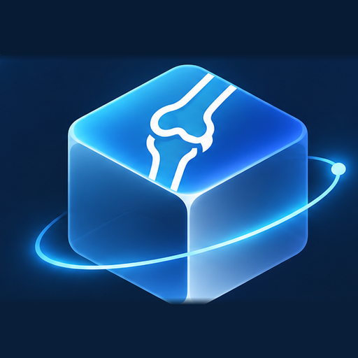

ATLASCEND
Kinesiology
BETA
On the Shoulders of Giants. Beyond the Atlas.
Panel
Front
Back
Lateral
Medial
3D
Anatomy
Loading anatomy models
Preparing the 3D view
Drag to rotate · Scroll or pinch to zoom